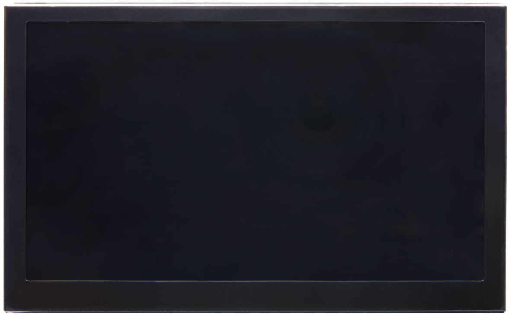

Chapter 4 LVDS LCD screen display experiment#
The experimental Vivado project is “lvds_lcd”.
This chapter introduces the color bar display of lvds lcd LCD screen.
Hardware introduction#
ALINX black gold 7-inch LCD screen module (AN7000) uses IVO’s 7-inch TFT LCD screen. The model number of the LCD screen is M070AWAD R0. AN7000 LCD screen module is made of TFT It consists of an LCD screen and a driver board. For specific parameters, please refer to the AN7000 user manual. The actual photos of AN7000 are as follows:
AN7000 LCD screen front view
programming#
1) Like PL’s “Hello World” LED experiment, add a block design, and add the CIPS core and configure it as PL Subsystem

Add LVDS LCD controller IP
Add Advanced IO Wizard and configure

Connect as follows

Add the color bar file, drag it to the block design, and connect it
Define VIDEO_1280_720 in video_define.v because the LCD resolution is 1280*720

Generate HDL file
Add some other signals
Constraint pins

Generate pdi file

Experimental phenomena#
Connect the LCD screen, download the program, and you can see the color bar display.